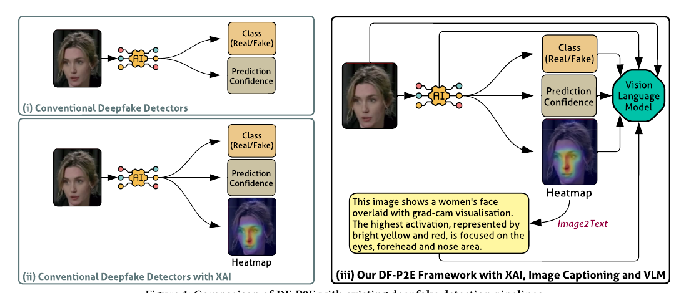
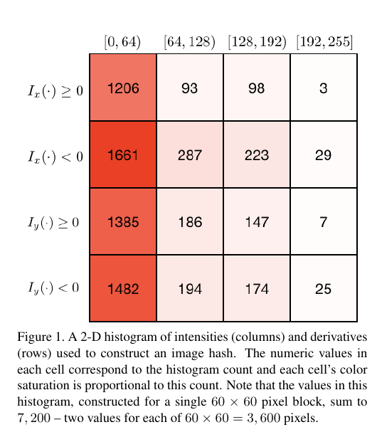

PP-MisDet listed as a CVPR 2026 workshop.
The workshop focuses on how falsified or staged visual content is created, circulated, trusted and operationalised in high-stakes settings such as elections, health and conflict.
Workshop page →Research in deepfake detection, multimedia forensics, privacy-preserving analysis, media provenance and AI security.
The lab builds practical AI-enabled systems for authenticating manipulated media, analysing cross-modal evidence and producing explanations that investigators, journalists, platform reviewers and non-expert users can act on.
Led by Dr Priyanka Singh, Senior Lecturer in Cyber Security at The University of Queensland, the group works across cyber security, digital forensics, privacy and security, homomorphic encryption, cloud computing and AI-enabled content authentication.
Our core problem is urgent: synthetic and manipulated media is becoming easier to generate, harder to detect and more persuasive when paired with misleading captions or narratives. The lab studies the full chain from manipulation and propagation to detection, explanation, provenance and trustworthy user-facing verification.
We focus on systems that can survive real deployment: robust models, auditable evidence, privacy-aware workflows and outputs that people outside a benchmark setting can understand.
Current activities across workshops, public commentary and cyber security community engagement.
The workshop focuses on how falsified or staged visual content is created, circulated, trusted and operationalised in high-stakes settings such as elections, health and conflict.
Workshop page →IMPACT focuses on impact-aware multimodal persuasive analysis, contextual trust, provenance, explainable verification and severity-aware misinformation evaluation.
Workshop page →The 2026 International Cybersecurity Challenge will be held on the Gold Coast from 18–21 May, bringing global cyber talent to Australia.
Event page →Dr Singh discussed the global Canvas breach affecting education institutions and the importance of calm, evidence-based public cyber security communication.
ABC News quoted Dr Singh on the rise of AI-generated fake digital IDs and the risks created when synthetic identity documents become easy to produce.
Read ABC story →UQ Contact asked Dr Singh to explain deepfake risks and practical verification cues for public audiences in the Sora 2 era.
Read guide →UQ Contact featured Dr Singh in a plain-language explainer on cookies, tracking, login persistence and online privacy.
Read story →Select a research area to view the explanation.
This area studies manipulation as a communication problem, not just a pixel-level artefact problem. A persuasive fake can use a real image with a misleading caption, a generated image with a true caption, or a coordinated package of image, text and source context.

DF-P2E reframes deepfake detection as an explanation pipeline. Instead of stopping at a confidence score, it combines a detector, Grad-CAM-style visual evidence, image-to-text captioning and LLM-based narrative refinement so users can inspect the reasons behind a verdict.

Privacy-preserving media forensics asks whether forensic matching or tamper checks can be performed without handing over sensitive plaintext media. Robust homomorphic image hashing shows how secure matching can operate on encrypted images while remaining robust to benign transformations.

Useful forensic systems should localise suspicious evidence, explain model decisions, remain calibrated under distribution shift and support user interaction. The aim is to make detection outputs usable for people who need to act on them.

The group’s public research profiles span digital forensics, multimedia forensics, encrypted-domain processing, cloud security, privacy-preserving AI and deepfake detection.
A CVPR workshop on multimodal misinformation, falsified visual evidence and trustworthy evaluation in high-stakes settings.
Workshop site →An ACM Multimedia 2026 workshop on multimedia-native, persuasion-optimised misinformation, contextual trust, provenance, robustness and human-centred verification.
Workshop site →Workshop by Parag Rughani and Priyanka Singh on Linux binary internals and malicious ELF analysis.
DFRWS page →Plain-language outreach helping non-expert audiences understand manipulated media, online tracking and everyday security risks.
Read public guide →Selected photos from lab activities, public engagement and cyber forensics community events.


Dr Priyanka Singh
Senior Lecturer in Cyber Security
School of Electrical Engineering and Computer Science
Affiliate, UQ Cyber Research Centre
The University of Queensland
School of Electrical Engineering and Computer Science
Brisbane, Australia